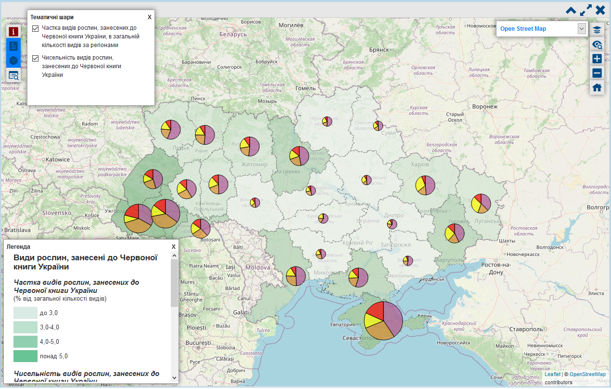

Електронний тематичний атлас – це інформаційна система, яка моделює склад, властивості, взаємозв'язки, закономірності просторового розміщення та просторової структури об'єктів та явищ територіальної системи певного рангу, об'єднаних визначеною темою. Моделювання окремих властивостей об'єктів та явищ територіальної системи здійснюється за допомогою карт, а додаткові текстові матеріали та мультимедійні елементи сприяють кращому розкриттю теми атласу.
Атлас може використовуватися для отримання інформації, аналізу, підтримки прийняття рішень, дослідження та отримання нових знань, а також в навчальних цілях.
Інтерфейс Атласу складається з двох функціональних вікон. Перше ("Зміст") є деревом змісту Атласу (див. рис. 1), яке виконує навігаційні функції і класифікує тематичний зміст Атласу. Друге (див. рис. 2) відповідає за відображення карт та інших матеріалів, що обрані користувачем у вікні "Зміст".
|  | |
| Рис. 1 – Вікно "Зміст" | Рис. 2 – Вікно вмісту (на прикладі карти "Види рослин, занесені до Червоної книги України") |
Робота з Атласом починається зі взаємодії з деревом змісту. У ньому містяться усі елементи змісту Атласу (карти, текстові матеріали тощо), розподілені за розділами та підрозділами.
Для кращої класифікації тематичного змісту кожний розділ атласу позначений шрифтом та іконкою певного кольору. Іконка кожного наступного підрозділу розділу зберігає свій колір та зменшується у розмірі. Так, колір іконки позначає приналежність підрозділу до розділу, а розмір іконки – ранг підрозділу (1-ого порядку, 2-ого порядку тощо). Для відкриття змісту розділу/підрозділу достатньо двічі натиснути кнопкою миші на його назву. Відкритий розділ/підрозділ позначається іконкою визначеного кольору та розміру (див. рис. 3).
Усі карти в атласі позначені іконкою . Її колір та розмір також залежать від розділу/підрозділу та його рангу. Документи та текстові матеріали позначені іконкою . Їх розмір відповідає рангу розділу/підрозділу. Для відкриття карт або текстів достатньо одного натискання кнопкою миші на їх назву.
Обрані елементи змісту відображаються у правому вікні або вікні вмісту (див. рис. 2). Керівництво з використання карт окремо створене для кожної карти і позначено кнопкою "Допомога" ( ) у лівому верхньому куті. Перед початком роботи з картами Атласу рекомендується ознайомитися з цим документом.
) у лівому верхньому куті. Перед початком роботи з картами Атласу рекомендується ознайомитися з цим документом.
Навігацію за тематичним змістом Атласу покликаний спростити "Пошук за тематичним змістом". Для пошуку необхідного елементу змісту достатньо ввести перші літери запиту у рядок пошуку.
Елементи змісту, які відповідають запиту, будуть виділені червоним курсивом у дереві змісту (див. рис. 4). При цьому обов'язково буде показаний розділ/підрозділ, в якому знаходиться шуканий елемент. Пошук є динамічним, тобто результат пошуку змінюється з кожною введеною літерою.
| Рис. 3 – Зразок відкритих розділів/підрозділів (на прикладі розділу "НАСЕЛЕННЯ – СУБ'ЄКТ ФОРМУВАННЯ ПРИРОДНОЇ ТА КУЛЬТУРНОЇ СПАДЩИНИ") | Рис. 4 – Приклад пошуку |
Додаткові можливості навігації за Атласом, а також альтернативні варіанти класифікації його змісту, надає дерево категорій (див. рис. 1 та рис. 5). Для його відкриття/закриття необхідно натиснути кнопкою миші на позначку "+" або слово "Категорії". Дерево категорій можна повністю прибрати з інтерфейсу Атласу, натиснувши на "х". Для розгортання/згортання розділів або підрозділів дерева потрібно натискати на позначки "+" або "-" поряд з іконкою розділу/підрозділу  . Для відкриття елементів дерева (карт або текстів) достатньо одного натискання кнопкою миші на їх назві.
. Для відкриття елементів дерева (карт або текстів) достатньо одного натискання кнопкою миші на їх назві.
| Рис. 5 – Вікно "Категорії" |